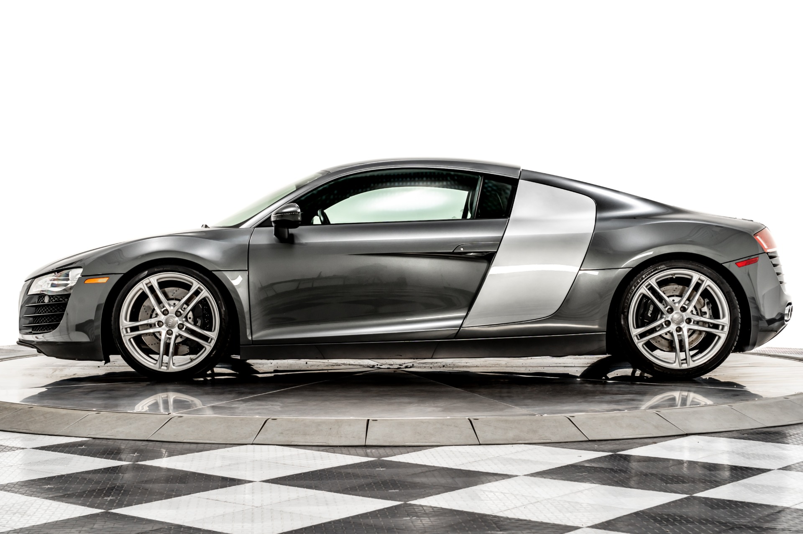

1981 Audi Quattro

We start this list with a true icon of the 1980s and while it was not a Group B monster, this Audi Quattro did boast a fascinating history. Originally delivered directly from the factory to the UK, it initially took up duties within the PR department at VAG in Milton Keynes, and promptly appeared in many period car magazines.
2004 Audi (C5) RS6 Avant.

Audi has a great heritage with high-performance estate cars, having started with the RS2 that paved the way for the marques famous RS performance line. This C5-generation Audi RS6 Avant was a well-preserved example of the powerful super estate, which had been cherished by a single private owner from new. Not only that, but it had been regularly serviced by its supplying dealer, Finchley Road Audi, with corresponding invoices accounting for around £50,000 worth of maintenance.
2011 Audi R8 4.2 V8

One of the many things that Audi has excelled at with its road cars is producing genuinely approachable high-performance cars, and its landmark supercar was no exception. This remarkably low-mileage example of the superb R8 V8 was offered for sale in Italy, and had covered just 17,194 kms.